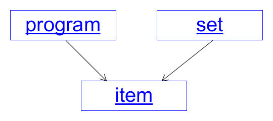
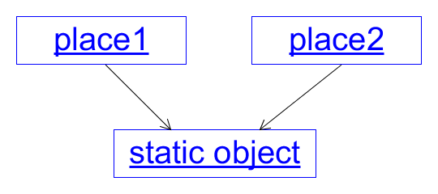
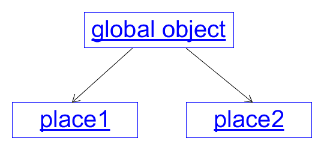

Fortran Lisp Algol Cobol APL Simula Snobol CPL Algol68 Mimic Trac MAD/I Pop PL/I Basic Coral APL BCPL Mumps InterLisp XPL Forth Logo Mapper Pilot B PPL IMP SETL Tutor Pascal BLISS KRL Smalltalk PL/M C INTERCAL Prolog Comal ML Lis CLU Grass ABC Scheme Modula Plus Mesa Ratfor S FP Icon Euclid Matlab SMALL VisiCalc Awk Ada CBASIC Draco Turing Objective-C C++ Occam Clascal Common-Lisp RPL OPL Paradox Clarion Eiffel Miranda PROMAL Erlang Self Hypertalk Perl Oberon Turbo-Basic Clean Octave Tcl SPARK A+ Magik J Haskell Python Oz Q Visual-Basic Dylan K Lua R Euphoria Claire Pike Java LiveScript Mercury PHP Ruby JavaScript Racket Curl VBScript OCaml E Pico Squeak ECMAScript ActionScript F-Script Tea Rebol UnrealScript Join-Java XL C# Joy AspectJ D GDScript Io Scratch Nemerle Factor Falcon Scala Squirrel HolyC Boo FreeBasic Groovy Fantom F# Haxe Oxegene Links Cobra Optimj Fortress Vala Agda Clojure Nim Genie Pure Chapel Go CoffeeScript Idris Parasail Whiley Rust Ceylon Kotlin Red Opa Elixir Elm Dart Elm TypeScript Julia Crystal Hack Swift Ring
* Concentrate on one family of languages, the OO ones
* Change one feature which is overdue for an upgrade
* Explore the consequences
OO languages in principle allow you to build complex programs from small, robust, bullet-proof components
Sources of ideas: Haskell, concurrency, teaching, design patterns, ... considered harmful
Here's a Java class that a student might write:
class Grid {
char[][] cells;
Grid(char[][] c) { cells = c; }
char[][] getCells() { return cells; }
}
A Java class can be made robust:
class Grid {
private char[][] cells;
Grid(char[][] c) { cells = copy(c); }
char[][] getCells() { return copy(cells); }
}
A little while after learning Java, I got a big shock
It isn't just student classes that are fragile:
You can break Java library classes
Set<Item> set = new HashSet<>(); set.add(item); item.update();
The hash code changed, the item is in the wrong slot
It is now a quantum hash table - the item is both in and not in the set - i.e. it is broken
This is very unlikely to happen, if it does, it is not just a bug, it is a cockroach
All languages are "the same", because they are all Turing Complete
But they differ in their psychological effect on program design and development
Arguably, Java has a bad psychological effect
It encourages a lack of robustness
The same (probably) applies to every other popular or potentially popular OO language
An update via one pointer is visible via the other
In Runway, an assignment makes a copy
1 point p.set(1,2); 2 point q = p; 3 q.set(3,4); 4 assert(p.x == 1 && p.y == 2);
The copying is lazy
On line 2, q points to the same object as
p
Copying happens on line 3 because p is "shared"
Lots of languages and libraries use related techniques - it is a ripe idea (C, C++, Rust, Swift, Immutable.js, ...) :
Runway just takes the idea to its logical conclusion
Java has no pointer notation, but you have to understand pointers properly to use Java well
Runway has no pointers in its mental model = semantics
Pointers are just an implementation technique, used to cope with variable sizes or to save memory
Languages have null as an accident of the pointer
notation
The most common uses are as empty structures or cheap exceptions
A null structure is justified in procedural languages, but not in OO languages
So Runway has tagged unions and cheap exceptions
Notes: unions, exceptions
Some say that 'object identity' is an essential aspect of OO, but it is just an accident of pointers
Runway doesn't have it: identity comes from a contained id or by associating it with a key in a lookup structure
So Runway has value equality (hooray!)
(and perhaps key equality)
In Java, objects and primitives are different
In many languages, they are made the same by making primitives act like objects ("boxing")
In Runway, they are made the same by making objects act like primitives
Pointing to o is the same as containing o
An object pointing to itself means containing itself
So it would be infinite
The lack of cycles has drastic consequences for program design and data structures, but they are well understood
A consequence of anti-aliasing is that static variables are out, because they have uncontrolled pointer aliasing:
Runway needs a different approach to global variables
Question: What would you do without globals?
Answer: you would pass objects down in calls
Definition: making an object global is an abbreviation for passing it to all the descendants of its owner
Notes: scope, singletons, escape
A constructor is static (because there isn't yet an object to call a method on)
So Runway doesn't have conventional constructors
But that's OK because conventional constructors and the new
keyword are 'considered harmful'
Constructors can't be inherited, and the phrase new Thing()
exposes some implementation details, preventing you from giving a recycled or
shared object, or a subclassed object (hence factory patterns)
point p; // create p as a copy of a default p.set(1,2); // initialize its fields
When you declare a variable, it is initialized to a (lazy copy of a) default object
That object has uninitialized fields, so it can't be used until they are initialized
set is an ordinary method, but with the property of
being a constructor
Here are some ways of creating a point:
point p = new point(3, 4); // Java var p = new point(3, 4); // JavaScript var p = point(3, 4); // Swift point p.set(3, 4); // Runway
Runway's version is syntactically shortest
More importantly, it is semantically simplest
int x, y;
set(x0, y0) { x = x0; y = y0; }
x() { return x; }
y() { return y; }
Is it a class? Is it a prototype? It's an object
Notes: names, private, singletons, inference
... window.display(cells); ...
The 'default' calling mechanism is call-by-copy (i.e. call-by-value in the deep functional-programming/formal-semantics sense, not the usual shallow OO sense)
So even if the window object is untrusted and updates the
argument, the grid object remains robust
However delegation, where you trust the software you build on, is an important OO principle (for DRYness)
... sorter.sort(&xs); ...
The & means the method can update or
replace xs
This is call-by-reference with a twist: the choice is made in the call, not in the method signature, e.g. if all calls are implemented by reference:
o.f(x) --> temp = x; o.f(&temp);
Runway will allow functions to be passed, but a function is always attached to an object as a method
The object is its closure (closures should not be a separate concept, as in JavaScript)
A function is passed as an object with a marked method (maybe explicitly like
Java's ...(x::f))
There is syntactic, semantic and implementation work to do here (aliases, dispatch)
Arguably, there are two kinds of inheritance:
Java's extends inheritance is interface inheritance plus
code/field reuse, and is considered harmful
vehicle car; car.set(...); car c;
Runway gives an absolute promise: c is a vehicle
statement theorem; theorem.restrict(); theorem t.set(s, p);
Maybe you could add methods, but not override them, or gain access to the private fields
Runway has a notation for declaring properties, e.g.
constructor: set
getter: x, y
int x, y
set(x0, y0) { x = x0; y = y0; }
For constructor, the compiler can check
For getter, it can also generate boiler-plate code
Properties are necessary for robustness
delegate to r: width, height, area ... rectangle r;
This is composition ('has-a') inheritance, close to subtype inheritance
(Possible optimisation in the implementation: extends)
like vehicle: car
...
wheels() { return 4; }
Java problem: can't retro-fit interfaces in libraries
In Runway, any type can be used as an interface
area() { return width() * height(); }
The area method is reusable in any type that has
width() and height()
like rectangle: window reuse: area ...
getter: key; ...
type parameter: R
like record: R
new(R) { ... }
...
For a safe hash table, as well as anti-aliasing, the key
method in the R type must be a getter, i.e.
not cause an update to the record or read from a global variable
In Runway, properties are inherited as well as APIs
Memory sharing concurrency is diabolical:
The standards for C and Java define a 'lowest common denominator' of hardware support and are incredibly complex and obscure
The Java library sources have thread issues in nearly every class; that's not orthogonal or encapsulated
non-determinism, deadlock, livelock, starvation, ...
Message passing provides a language in which to be explicit about and reason about concurrency problems
But it doesn't solve any of them
Arguably, a classic case of building a substantial theory around a broken idea
An object can introduce a new thread
The thread 'owns' the object and all the data below it
Method calls on the object look normal, so the new thread is an annotation
Access to the result or an updated argument by the parent thread causes a synchronizing pause
This is message-passing concurrency
The intention is that the program with the thread annotation has identical functionality to the program without it
So, the concurrency can only be used for latency hiding
But that's enough for many purposes, including servers and graphics (graphics libraries always used to be threaded, but they have typically moved to the callback style, which is fairly diabolical)
Communications are handled via a very old concept: the single input stream of events
All events are in the stream, and the ordering is critical - it defines their relative timings
That means auto-dispatch to the right place is either banned or implemented with extreme care
So: still deterministic
Non-determinism is handled by adding one feature:
The program can inject an event into the stream (at a time-dependent position)
You can replay a program from a recorded event stream
Then you can debug and (regression) test programs!
Understanding of the system at the moment is based around thought experiments of possible programs:
A program OS runs two other programs A and
B as modules, not as separate processes
It needs A and B to run in their own threads
It needs to set up a 'fake' system environment of global
variables and devices etc. separately for A and B
And it needs to unzip the event stream into two event streams
Think of an X-Window style system:
The program sends a "hide rat" graphics request and asks for an acknowledgement to be injected into the event stream
The player wins if the click event comes before the acknowledgement
An update request, in its own thread, updates a copy of the database, and ends by injecting a 'new database version' event into the queue
Read requests after the injection see the new version
The update requests would have to be serialized
Or the database can be split into independent pieces to allow concurrent updating (like locking)
Or the updates could be merged, with retries (like speculative versioning)
There is much work to be done here, but there is a prospect of a much more sensible system than usual
Semantically sensible latency hiding may depend on splitting a window into independent subwindows which can be drawn on concurrently without interference
csijh.github.io